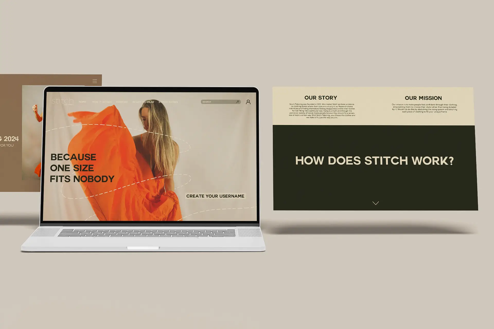
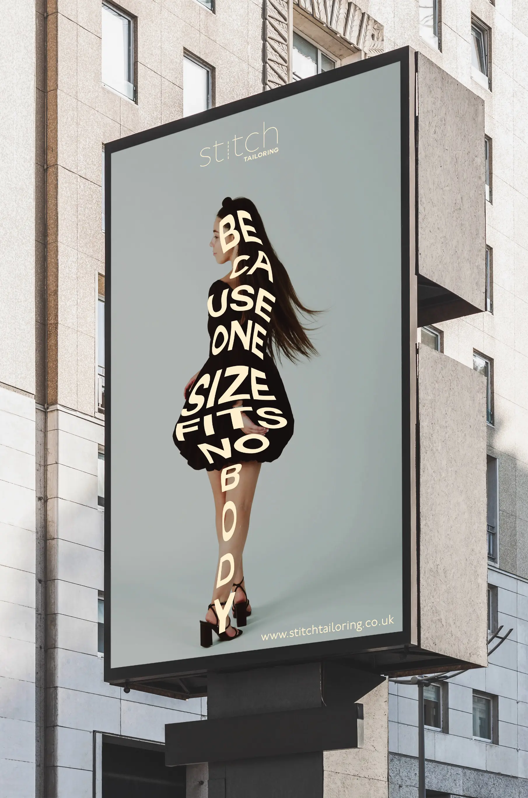
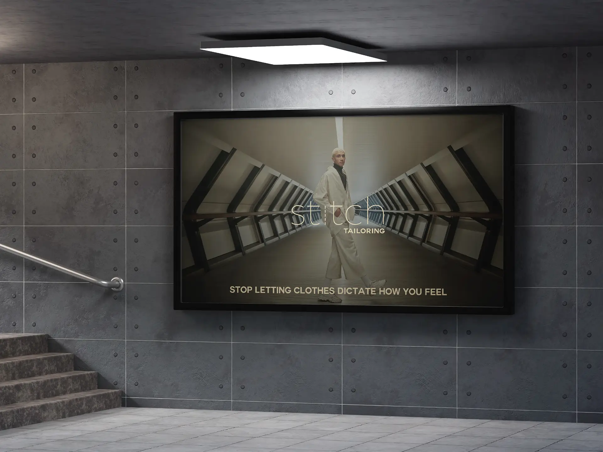
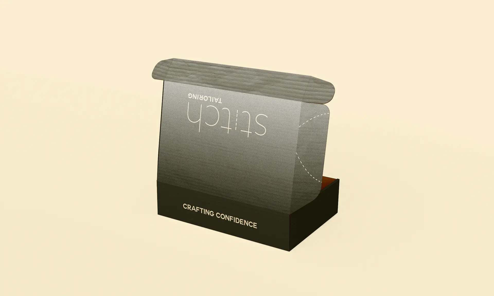
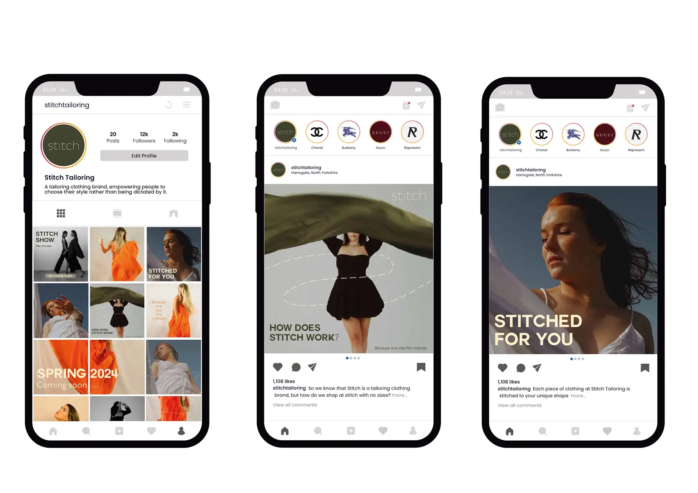
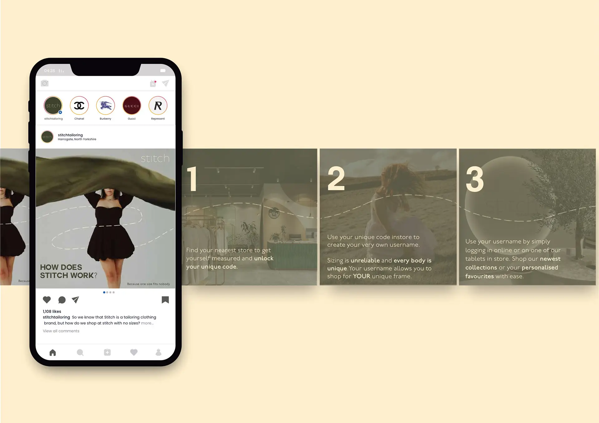

Stitch Tailoring
Stitch is a clothing brand which strives to make people feel confident through garments. Empowering individuals to choose their style rather than being dictated by it. Unrealistic beauty standards leads to people wanting to lose weight to become a particular clothing size, which harms mental health and body image. Stitch Tailoring abolishes the sizing system, stitching each piece to fit your unique frame. To shop at stitch, you need to become a member. Each member gets to create their very own username to ensure each garment is personalised to you.
Scroll to see more...







Check out more of my work below!
Wholesome Harvest
2024